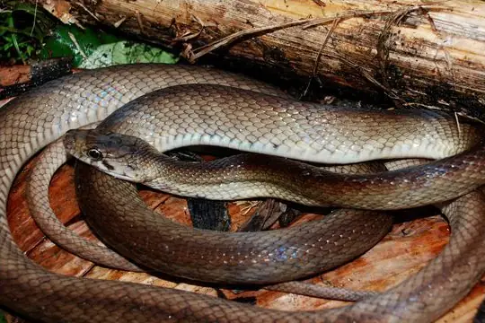
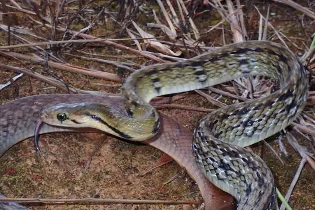
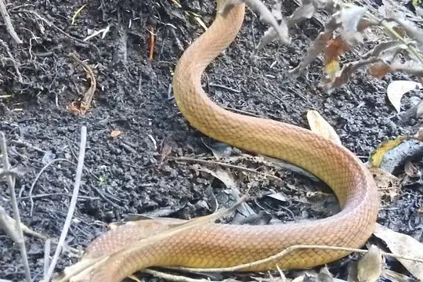
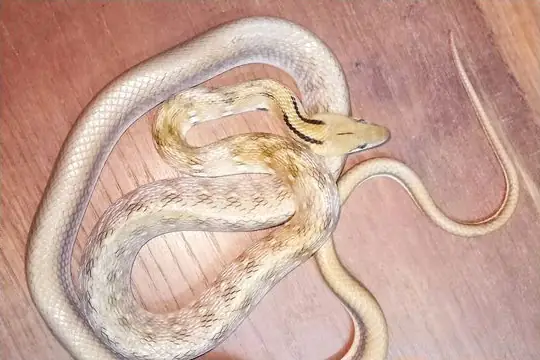

Coelognathus
The genus Coelognathus (family Colubridae) has 7 living species in SnakeList (none venomous), recorded in 17 countries.
- 7living species
- 7non-venomous
- 17countries
About the genus
A genus of the family Colubridae (colubrids).
Species
Showing 7 species

Enggano Rat SnakeCoelognathus enganensis Radiated RatsnakeCoelognathus radiatus
Radiated RatsnakeCoelognathus radiatus Reddish Rat Snake (erythrurus)Coelognathus erythrurus
Reddish Rat Snake (erythrurus)Coelognathus erythrurus
Reddish Rat Snake (philippinus)Coelognathus philippinus
Sunda Rat SnakeCoelognathus subradiatus
Trinket SnakeCoelognathus helena Yellow Striped SnakeCoelognathus flavolineatus
Yellow Striped SnakeCoelognathus flavolineatus
No snakes in Coelognathus match.
About the genus Coelognathus
- Distribution: living species recorded in 17 countries, on one continent: Asia.
- Family: Colubridae.
- Countries and territories: Bangladesh, Bhutan, Cambodia, China, India, Indonesia, Laos, Malaysia, Myanmar, Nepal, Pakistan, Philippines, Singapore, Sri Lanka, Thailand, Timor-Leste, Vietnam.
Compare its species
Its living species side by side. Lengths come only from SnakeList’s reviewed, sourced accounts; the others are left blank rather than guessed.
| Species | Venom | Recorded in | Adult length (reviewed accounts) |
|---|---|---|---|
| Enggano Rat Snake Coelognathus enganensis | Non-venomous | 1 country (Asia) | No reviewed account yet |
| Radiated Ratsnake Coelognathus radiatus | Non-venomous | 11 countries (Asia) | No reviewed account yet |
| Reddish Rat Snake (erythrurus) Coelognathus erythrurus | Non-venomous | 2 countries (Asia) | No reviewed account yet |
| Reddish Rat Snake (philippinus) Coelognathus philippinus | Non-venomous | 1 country (Asia) | No reviewed account yet |
| Sunda Rat Snake Coelognathus subradiatus | Non-venomous | 2 countries (Asia) | No reviewed account yet |
| Trinket Snake Coelognathus helena | Non-venomous | 6 countries (Asia) | No reviewed account yet |
| Yellow Striped Snake Coelognathus flavolineatus | Non-venomous | 8 countries (Asia) | No reviewed account yet |